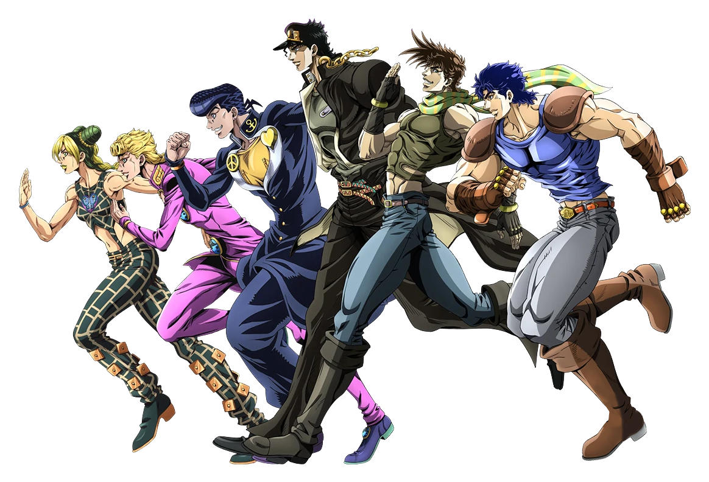

Nacido en Sendai, Hirohiko Araki es un mangaka japonés
autor de uno de
los mangas más populares: JoJo's Bizarre Adventure.
Todo comenzó cuando un amigo de su escuela elogió su manga, de ahí comenzó a dibujar en secreto y se lo ocultó
a sus padres.
Hizo su debut bajo el seudónimo Toshiyuki Araki en con su one-shot Busou
Poker, pero no fue sino hasta
que logró su gran éxito en la revista Weekly Shounen Jump con JoJo's
Bizarre
Adventure.
Araki y su éxito con JoJo
Si bien JoJo en Japón fue un éxito y que el estudio APPP adaptara la parte más famosa de su manga (Stardust
Crusaders) al anime y tuviera cierto reconocimiento en internet, no fue sino hasta la adaptación hecha por
David Production en el que su popularidad estalló fuera de Japón y tuviera
plena aceptación.
Araki en la actualidad
Luego de más de 30 años de publicación, JoJo's Bizarre Adventure se ha convertido en una obra
de referencia
para Shueisha, con más de 100 volúmenes publicados.
Araki además se ha convertido en un icono artístico. En fue elegido por el
Louvre como uno de cinco
artistas para crear una obra original ambientada en el famoso museo. Su obra, Rohan at the Louvre, muestra a
su personaje Rohan Kishibe en el museo, y fue exhibida allí, con mucho éxito.
Para saber más sobre Araki, puedes visitar la biografía escrita en Crunchyroll.

Generaciones Joestars:
Jolyne, Giorno, Josuke, Jotaro, Joseph y Jonathan